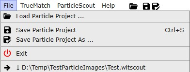
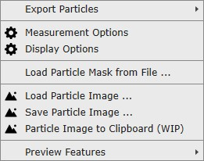
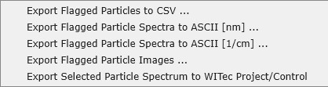
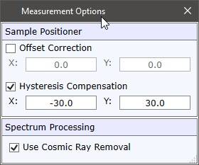
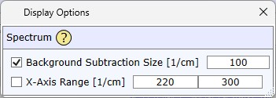
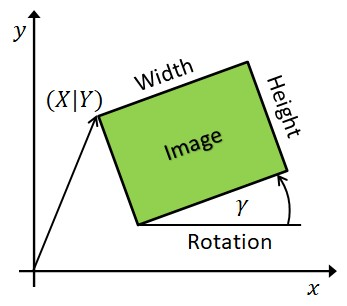

|
菜单
|
文件菜单

加载颗粒项目
加载先前保存的颗粒项目。
保存颗粒项目（另存为）
保存当前颗粒项目，包括所有颗粒及其属性、缩略图图像、光谱和数据库搜索结果。
退出
退出应用程序。
最近文件
最近使用的颗粒侦察文件显示在底部。单击即可加载颗粒项目。
ParticleScout菜单

导出颗粒

导出标记颗粒到CSV
将所有标记颗粒及其属性导出为分号分隔的文件。
导出标记颗粒光谱到ASCII [nm] / [1/cm]
将所有标记颗粒的测量光谱导出到ASCII文件，格式为 WITec TrueMatch ASCII导入 格式。
选择所需X轴单位的菜单项。
导出标记颗粒图像
将标记颗粒的图像导出到所需文件夹。
导出选定颗粒光谱到WITec Project/Control
将当前选定颗粒的测量光谱导出到剪贴板。可以作为新的单光谱对象粘贴到WITec Project/Control的项目管理器中。仅在选择单个颗粒时有效。

偏移校正
如果设置，ParticleScout将为每个颗粒移动样品定位器，或在使用移动至颗粒按钮时移动。
滞后补偿
如果设置，在移动到颗粒之前执行滞后补偿。
使用宇宙射线去除
如果选中，使用宇宙射线检测算法自动去除测量的拉曼光谱中的宇宙射线。仅在使用至少2次累加时有效。
显示选项

背景扣除大小
如果选中，在所有显示光谱的视图中执行 形状背景扣除。
X轴范围
如果选中，在所有显示光谱的视图中显示精确定义的光谱范围。
从文件加载颗粒掩膜...
加载位图并使用所有白色像素作为掩膜像素以添加新颗粒。如果当前项目中已存在颗粒，您可以选择创建新项目或将颗粒添加到当前项目。
加载颗粒图像...
加载一个或多个颗粒图像文件（例如*.bmp或*.png）。如果已有打开的颗粒项目，将弹出消息框，用户可以选择
您可以加载包含坐标信息（大小、偏移和旋转）的图像。可以通过在相同目录下保存与图像文件同名的文本文件（.txt）来定义坐标信息。使用"."作为小数分隔符。宽度/高度单位为微米。X/Y/Z坐标为图像的左上角，单位为微米。旋转单位为弧度。像素必须为正方形。
示例：
Width: 558.24
Height: 558.24
X: 0
Y: 0
Z: 0
Rotation: 0

保存颗粒图像...
将当前颗粒图像保存为Windows位图文件。注意，软件允许保存最大约700,000,000像素的位图，某些软件可能无法读取。
颗粒图像到剪贴板（WIP）
以WIP格式将颗粒图像复制到剪贴板，以便粘贴到正在运行的WITecProject或WITecControl实例的项目管理器中。如果图像超过8000x8000像素，将缩小尺寸。